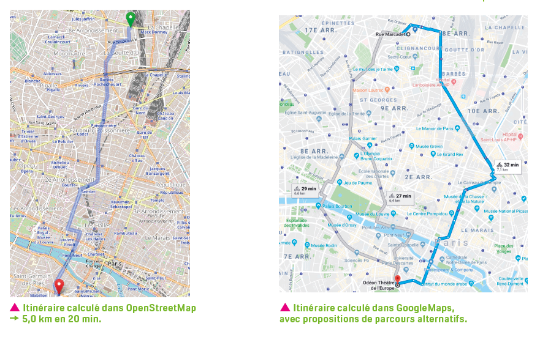
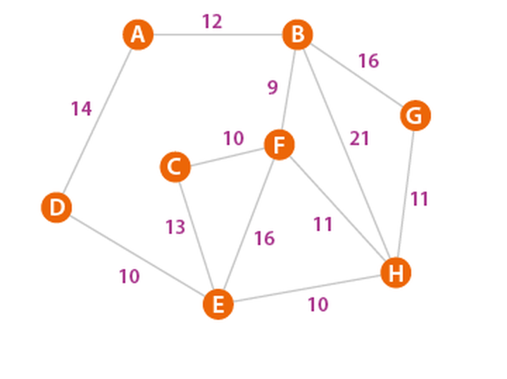
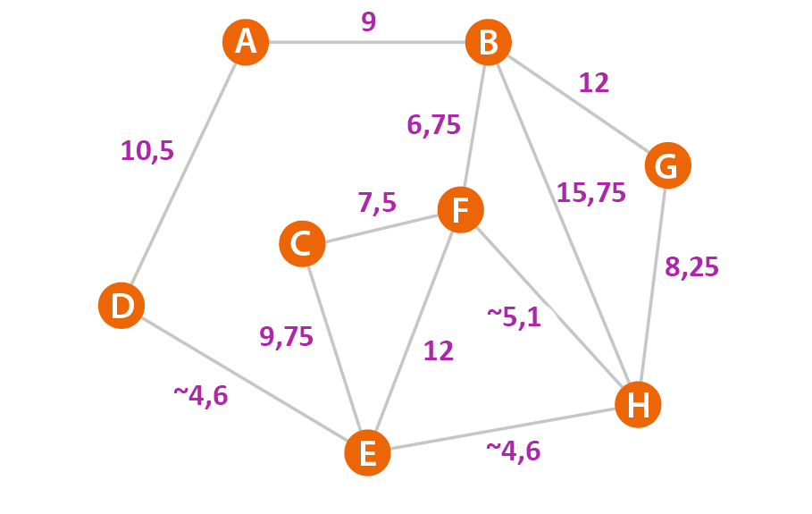

Chapitre 5 – Cartographie et localisation
Calcul du plus court chemin
1 Deux calculs d’itinéraires
Les deux cartes ci-dessous présentent deux calculs d’itinéraires entre les mêmes points, réalisés avec deux applications différentes.

Compare les deux calculs d’itinéraires. Quels sont les éléments qui peuvent expliquer les différences de durée du trajet ?
2 Un itinéraire est un graphe
Un itinéraire peut se représenter mathématiquement par un graphe. Par exemple, dans le graphe ci-dessous, les sommets sont des villes et les arêtes sont les distances (en kilomètres) entre deux villes. Pour calculer des itinéraires (plus court, plus rapide, etc.) sur un graphe, de nombreux algorithmes s’appuyant sur la théorie des graphes ont été développés.
En théorie des graphes, l’algorithme de Dijkstra permet de résoudre le problème du plus court chemin (par exemple, le plus court chemin pour se rendre d’une ville à une autre connaissant le réseau routier d’une région). Il porte le nom de son inventeur, l’informaticien néerlandais Edsger Dijkstra, et a été publié en 1959.

Quel est le chemin le plus court pour se rendre de la ville A à la ville H ? Est-ce le plus rapide ?
3 L’algorithme de Dijkstra
Regarde la vidéo ci-dessous pour comprendre la méthode.
On ajoute au graphe des informations sur les arêtes : la vitesse est limitée à 80 km/h sur toutes les routes, sauf sur les routes DE, EH et FH où la vitesse maximale est de 130 km/h. On obtient le graphe suivant, où chaque arête indique le temps nécessaire (en minutes) pour la parcourir.

Justifie qu’il faut 10,5 minutes pour parcourir le chemin AD, et environ 4,6 minutes pour le chemin EH.
Rappel : v = d ÷ t, donc t = d ÷ v.
En t’inspirant de la méthode présentée dans la vidéo et en utilisant le tableau ci-dessous, détermine, cette fois, le chemin le plus rapide. Quelle est sa durée ?
| A | B | C | D | E | F | G | H | Choix |
|---|---|---|---|---|---|---|---|---|
| 0 | ∞ | ∞ | ∞ | ∞ | ∞ | ∞ | ∞ | A (0) |
| 9 v A | ∞ | 10,5 v A | ∞ | ∞ | ∞ | ∞ | B (9) | |
Lecture : « 9 v A » signifie « 9 minutes en venant de A ».